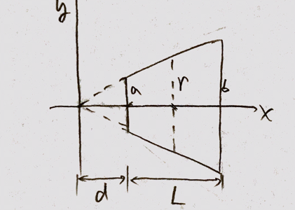

See figure. The cross section of the resistor is circular. The radius of one end is a, and that of the other end is b, and the length of the resistor is L. The resistivity of the resistor is ρ. Find the resistance R.

Solution
(1) According to similarity
d+Ld=ba⇒d=b−aaL
The lower bound of x is d=b−aaL, and the upper bound is d+L=b−abL
(2) The area of cross section is
d+LxA=br⇒r=L(b−a)x=πr2=L2π(b−a)2x2
(3) The resistance can be calcuated by integration.